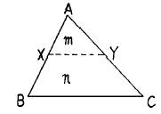
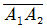
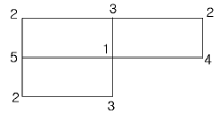
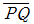
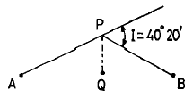
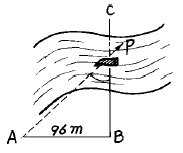
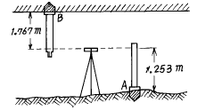
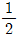
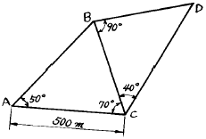
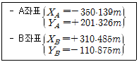

측량및지형공간정보산업기사 (2002-03-10 기출문제)
1과목: 응용측량
1. 그림과 같은 토지의 BC에 평행한 선분 XY로 m:n=1:3 의 면적비율로 분할하고자 한다. AB가 80m일 때 AX는?

- 20m
- 40m
- 60m
- 70m
(정답률: 알수없음)

2. 양단면의 면적이 각각 A1=84m2, A2=30m2 이고 그 중앙단면의 면적이 Am=60m2 인 구조물이 있다.

의 길이가 10m일 때 체적은?- 590m3
- 600m3
- 570m3
- 580m3
(정답률: 0%)
3. 다음은 토지의 교차점에 대한 절토높이를 나타낸 것이다. 절토량은 얼마인가? (단, 단위는 m, 각 구역의 크기는 같으며 4m × 2m이다)

- 28m2
- 36m2
- 48m2
- 64m2
(정답률: 75%)
4. 철도에서 주로 사용하는 완화곡선의 길이를 구하는 식으로 옳은 것은? (단, N : 계수, V : 속도, S : 궤간거리, g : 중력가속도 R : 곡선반경)
- (N/1000) (VS2/gR)
- (N/1000) (V2S/gR)
- (N/1000) (VS2/gR2)
- (N/1000) (V2S/gR2)
(정답률: 알수없음)
5. 다음 설명 중 옳지 않는 것은?
- 클로소이드곡선은 일종의 완화곡선이다.
- 철도의 종단곡선은 종곡선설치법에 따른다.
- 클로소이드곡선은 고속도로에 적합하다.
- 클로소이드곡선은 곡률이 곡선의 길이에 반비례한다.
(정답률: 알수없음)
6. 다음 그림에서 AP, PB 사이에 단곡선을 설치할 때 ∠APB의 2등분선상 Q점을 곡선의 중점으로 하면 이 곡선의 곡선반경은? (단,

= 20m, 교각(I) = 40° 20′ )
- 256.27m
- 270.46m
- 306.23m
- 335.48m
(정답률: 알수없음)
7. 하천에서 수심측량 후 측점에 숫자로 표시하는 지형표시 방법은?
- 점고법
- 기호법
- 우모법
- 등고선법
(정답률: 알수없음)
8. 다음 그림과 같은 하천의 BC선에 연하여 심천측량을 행하였다. A점을 BC에 직각으로 AB=96.00m로 정하고 선상 P점에서 측정한 ∠APB값이 43° 40´ 일 때 BP의 거리는?

- 91.6m
- 139.0m
- 100.6m
- 1⑤.5m
(정답률: 알수없음)
9. 노선측량에서 연장 2km에 대하여 결합트래버스 측량을 실시할 때 폐합비의 한도를 1/5000로 하면 폐합오차의 허용한계는?
- 0.25m
- 2.5m
- 0.4m
- 0.5m
(정답률: 알수없음)
10. 경사 30° 인 사갱의 갱구와 갱저 간의 고저차를 엄밀하고 용이하게 측정하는데 가장 적당한 방법은?
- 경사계에 의해서 경사를 구하고 사거리를 측정하여 계산으로 구한다.
- 수은 기압계에 의하여 측정한다.
- Y 레벨로 직접 수준측량을 한다.
- 트랜싯으로 경사를 구하고 사거리를 측정하여 계산으로 구한다.
(정답률: 알수없음)
11. 갱내 천정 B에 수준점을 측설하기 위하여 갱내 고저측량 을 실시하였다. B점의 지반고는? (단, A점의 지반고는 87.216m임)

- 84.196m
- 86.702m
- 87.730m
- 90.236m
(정답률: 알수없음)
12. 직선 터널 양쪽의 좌표가 A(120,60), B(240,70)이고 각각의 높이가 80m, 82m 일 때 이 터널의 경사거리는? (단, 단위는 m임)
- 120.12m
- 120.43m
- 125.44m
- 130.43m
(정답률: 알수없음)
13. 주망원경으로 부터 10㎝위에 위치한 정위 망원경으로 앙각 51° 38′ 을 측정했을 때 사거리가 115m였다면 올바른 연직각은?
- 51° 35′ 01″
- 51° 36′ ⑤″
- 51° 39′ 55″
- 51° 40′ 59″
(정답률: 알수없음)
14. 다음 중 교량의 경관계획에서 결정할 사항이 아닌 것은?
- 교량의 형식 및 규모
- 교량의 형태 및 색채
- 교량과 수면의 조화
- 교량의 관리
(정답률: 알수없음)
15. 다음 중 클로소이드의 설치방법이 아닌 것은?
- 주접선으로 부터 직각좌표에 의한 설치법
- 극각 동경법에 의한 설치법
- 현각 현장법에 의한 설치법
- 편각법에 의한 설치법
(정답률: 알수없음)
16. 다음 중 원곡선의 설치에 필요한 요소가 아닌 것은?
- 접선길이(T.L)
- 이정량(Δ R)
- 곡선길이(C.L)
- 외할(E)
(정답률: 알수없음)
17. 직사각형 땅의 두 변의 길이를 측정하니 6m, 4m 이었다. 이 땅의 가로 세로를 같은 크기로 늘려 면적을 재측정한 결과가 48m2 이었다면 늘린 길이는?
- 2 m
- 3 m
- 4 m
- 5 m
(정답률: 알수없음)
18. 다음 중 유토곡선(Mass Curve)을 작성하는 목적에 해당되지 않는 것은?
- 토공기계의 결정
- 토량의 배분
- 토량의 운반거리 산출
- 토공의 단가 결정
(정답률: 알수없음)
19. 하천측량에서 평균유속을 2점법으로 구하는 식은?
- Vm =
 (V0.2+V0.8)
(V0.2+V0.8) - Vm =

(V0.4+V0.8) - Vm =
 (V0.2+V0.7)
(V0.2+V0.7) - Vm =
 (V0.2+V0.6)
(V0.2+V0.6)
(정답률: 알수없음)
20. 경관예측에 관한 다음의 설명 중 옳지 않은 것은?
- 수평시각은 대상물의 시점과 종점을 시준할 때의 각도를 말한다.
- 수직시각은 대상물의 특정부분의 상· 하단을 시준하는 각도를 말한다.
- 시설물의 식별은 시설물과 시점(視點)사이의 거리(D)에 의해 크게 변화한다.
- 일반적으로 시점의 위치가 낮은 쪽이 정(靜)적인 인상을 받고 높게 됨에 따라 동(動)적인 인상이 강하게 된다.
(정답률: 알수없음)
2과목: 사진측량 및 원격탐사
21. 대지표정이 완전히 끝났을 때에는 사진모델과 실제지형은 다음 어느 관계가 성립하는가?
- 일치
- 상사
- 상반
- 합동
(정답률: 알수없음)
22. 다음 중 항공사진 판독의 기본 요소가 아닌 것은?
- 색조, 크기
- 질감, 모양
- 형상, 음영
- 날짜, 촬영고도
(정답률: 알수없음)
23. 수치지형 모형을 활용하여 수치지형도를 작성할 때의 자 료취득방법 중 일반적으로 많이 적용하는 방법은?
- 직접 측량하여 취득하는 방법
- 사진측량에 의한 방법
- 우주선에 탑재된 탐측기를 이용하는 방법
- 기존지형도를 이용하는 방법
(정답률: 알수없음)
24. 화면거리 18cm, 화면크기 18cm × 18cm인 카메라로 촬영고도 3000m에서 찍은 연직사진에서 종중복도 60%, 횡중복도 30%일 때 촬영 횡기선장은 종기선장의 몇 배인가?
- 1.75배
- 2.00배
- 2.25배
- 2.50배
(정답률: 알수없음)
25. 화면거리 15cm의 카메라로 찍은 축척 1/10,000의 연직사진을 아메리칸 C-factor가 1200인 도화기로 도화하려고 한다. 등고선의 등간격은 얼마로 하는가?
- 0.25m
- 0.50m
- 1.25m
- 1.50m
(정답률: 알수없음)
26. 화면의 크기 23cm x 23cm인 사진기로 평탄지를 촬영고도 3,000m에서 촬영하였을 때 연직사진의 면적이 21.16km2 이었다면 화면거리는?
- 10 cm
- 13 cm
- 15 cm
- 17 cm
(정답률: 알수없음)
27. 인공위성에 의한 원격탐측(Remote Sensing)의 장점이 아닌 것은?
- 관측자료가 수치적으로 취득되므로 판독이 자동적이며 정량화가 가능하다.
- 관측 시각이 좁으므로 정사투영상에 가까워 탐사자료의 이용이 쉽다.
- 자료수집의 광역성 및 광역 동시성, 수량적인 정확도가 크다.
- 회전주기가 일정하므로 언제든지 원하는 지점 및 시기에 관측하기 쉽다.
(정답률: 알수없음)
28. 항공사진 측량에 많이 사용되는 사진은?
- 거의수직사진
- 엄밀수직사진
- 저경사사진
- 수평사진
(정답률: 알수없음)
29. 화면거리 150mm, 화면크기 23cm× 23cm, 비행고도 7,500m인 항공사진의 실체모델이 차지하는 대지면적은? (단, overlap은 60%, sidelap은 30%로 가정)
- 37.03 km2
- 41.03 km2
- 49.03 km2
- 60.23 km2
(정답률: 알수없음)
30. 종중복도가 70％이고 촬영종기선 길이와 촬영횡기선 길이의 비가 3:8일 때 횡중복도는 몇 ％인가?
- 10％
- 20％
- 30％
- 40％
(정답률: 알수없음)
31. 다음 사진측량의 분류 중 촬영방향에 의한 분류에 속하는 것은?
- 경사사진
- 항공사진
- 수중사진
- 지상사진
(정답률: 알수없음)
32. 다음 중 사진측량학의 응용범위로 볼 수 없는 것은?
- 정찰용 탐험 등에 이용
- 토양의 판독, 농업조사, 토지이용 조사에 이용
- 토목설계에 이용
- 구조물, 문화재의 기록이나 조사 및 변위측정에 이용
(정답률: 알수없음)
33. 다음 중 사선법에 사용되는 사진의 조건이 아닌 것은?
- 종중복 60% 이상, 횡중복 30% 이상 중복촬영한 사진이어야 한다.
- 촬영구역의 기복이 촬영고도의 10~15% 이내이어야 한다.
- 사진의 경사는 5° 이내의 것이어야 한다.
- 표정점으로 적어도 두 점의 기지점이 필요하다.
(정답률: 알수없음)
34. 다음 중 편위수정에 대한 설명으로 옳은 것은?
- 경사변위의 수정
- 기복변위의 수정
- 비고의 수정
- 시차의 수정
(정답률: 알수없음)
35. 다음은 항공사진의 재촬영에 관한 설명이다. 다음 중 재촬영을 하지 않아도 되는 것은?
- 필요한 구역이 일부분이라도 촬영되지 않았을 때
- 종중복도가 50% 이하일 때
- 촬영기울기가 4° 이내일 때
- 스모그(smog)로 사진상이 선명하지 못할 때
(정답률: 알수없음)
36. 다음 중 사진의 축척을 결정하는데 고려할 필요가 없는 것은?
- 사용목적, 사진기의 성능
- 사용되는 사진기, 소요 정밀도
- 도화 축척, 등고선 간격
- 지방적 특색, 기상관계
(정답률: 알수없음)
37. 비행고도가 일정할 때 한 장의 사진에 가장 넓은 면적이 찍히는 사진기는?
- 보통사진기
- 광각사진기
- 초광각사진기
- 모두 같다
(정답률: 알수없음)
38. 다음 중 내부표정과 관계 없는 사항은?
- 투명 양화판을 도화기의 투영기에 촬영 당시와 같은 상태로 장착시키는 작업이다.
- 사진의 중심점과 도화기 사진판의 중심점을 일치 시킨다.
- 촬영당시 촬영면상에 이루어지는 종시차를 소거하여 목표 지형물의 상대적 위치를 맞추는 작업이다.
- 주점의 위치결정과 화면거리 조정을 한다.
(정답률: 알수없음)
39. 높이가 같은 지형지물은 사진상에서 다음 중의 어느 것이 같게 나타나는가?
- 시차
- 상차
- 오차
- 폐합차
(정답률: 알수없음)
40. 항공사진에서 화면거리는?
- 화면과 화면 사이의 거리
- 화면과 기준면 사이의 거리
- 중심 투영점에서 사진면에 이르는 직교거리
- 사진면에서 기준면에 이르는 거리
(정답률: 알수없음)
3과목: GIS 및 GPS
41. 트래버스 측량에서 측점 A의 좌표가 X=150m, Y=200m이고 측점 B까지의 측선 길이가 150m일 때 측점 B의 좌표는? (단. AB측선의 방위각은 280° 15′ 13″ 이다)
- X=176.70, Y=52.40
- X=176.70, Y=347.60
- X=150.72, Y=53.19
- X=150.72, Y=4.19
(정답률: 알수없음)
42. 축척 1/1000의 도면상 면적을 측정해보니 1.40cm2이었다. 이 도면이 전체적으로 1% 수축되어 있다면 이 토지의 실제면적은?
- 138.84m2
- 140.84m2
- 142.84m2
- 144.84m2
(정답률: 알수없음)
43. 다음 중 그 의미가 다른 것은?
- GIS (Geographic Information System)
- GSIS (GeoSpatial Information System)
- GPS (Global Positioning System)
- 지리정보체계
(정답률: 알수없음)
44. 높이 5m인 표척이 30cm 기울어져 있을 때 4m의 읽음값에 대한 관측오차는?
- 2.4cm
- 0.5cm
- 0.72cm
- 0.0⑤cm
(정답률: 알수없음)
45. 실제거리 4km인 두 점간의 거리가 1/25,000지형도상에 나타나는 도면상의 점간 거리는?
- 16cm
- 18cm
- 20cm
- 24cm
(정답률: 알수없음)
46. 다음과 같은 3각망에서 CD의 거리는?

- 383.022m
- 433.013m
- 500.013m
- 577.350m
(정답률: 알수없음)
47. 다음의 오차에 대한 설명으로 옳은 것은?
- 대기의 밀도에 따라 광선이 직진하지 않고 구부러져서 생기는 오차를 구차라 한다.
- 삼각 수준측량에서 구차는 낮게, 기차는 높게 조정한다.
- 구차와 기차가 합성된 오차를 양차라 한다.
- 지구의 곡률에 의한 오차를 기차라 한다.
(정답률: 알수없음)
48. 도상에서 3변 길이를 측정한 결과 각각 21.5cm, 30.3cm, 28cm이었다면 실제면적은? (단, 지형도의 축척 = 1/500)
- 7,325m2
- 7,424m2
- 7,124m2
- 7,240m2
(정답률: 알수없음)
49. 지형공간정보 체계의 자료에 대한 설명으로 옳지 않은 것은?
- 자료는 위치자료(도형자료)와 특성자료(속성자료)로 대별된다.
- 위치자료의 기반은 도면이나 지도와 같은 도형에서 위치의 값이 수록하는 정보의 화일이다.
- 특성자료의 기반은 일반적인 통계자료 또는 영상자료의 화일이 아니다.
- 위치자료 기반과 특성자료 기반은 서로 연관성을 가지고 있어야 한다.
(정답률: 알수없음)
50. 삼각측량에서 삼각형의 내각 관측결과 ∠A=55° 12′ 20″, ∠B=35° 23′ 40″, ∠C=89° 24′ 30″ 였다면 각각의 최확치로 옳은 것은?
- ∠A=55° 12' 20", ∠B=35° 23' 30", ∠C=89° 24' 15"
- ∠A=55° 12' 25", ∠B=35° 23' 45", ∠C=89° 24' 35"
- ∠A=55° 12' ⑤", ∠B=35° 23' 35", ∠C=89° 24' 25"
- ∠A=55° 12' 10", ∠B=35° 23' 30", ∠C=89° 24' 20"
(정답률: 알수없음)
51. 트랜싯으로 수평각을 관측할 때 망원경을 정.반위상태로 관측하여 평균값을 취해도 소거되지 않는 오차는?
- 시준축의 편심오차
- 수평축오차
- 시준축오차
- 연직축오차
(정답률: 알수없음)
52. A, B 두 삼각점의 평면직각좌표가 다음과 같을 때 AB측선의 방위각은?

- 25° 17′ 41″
- 154° 42′ 19″
- 208° 17′ 41″
- 334° 42′ 19″
(정답률: 알수없음)
53. 스타디아측량에서 고저차 H를 구하는 식으로 옳은 것은?
- H = (1/2) kℓ cos 2α + C cosα
- H = kℓ sin2α + C sinα
- H = (1/2) kℓ sin 2α + C sinα
- H = kℓ cos2α + C cosα
(정답률: 알수없음)
54. 수준측량의 측량방법에 따른 분류에 속하지 않는 것은?
- 직접수준측량
- 간접수준측량
- 교호수준측량
- 종단측량
(정답률: 알수없음)
55. 지형도의 일반적인 등고선 간격은?
- 축척분모의 약 1/500
- 축척분모의 약 1/1,000
- 축척분모의 약 1/2,000
- 축척분모의 약 1/4,000
(정답률: 알수없음)
56. 다음 설명 중 옳지 않은 것은?
- 위치정보는 공간적 해석이 가능하도록 대상물에 절대적 또는 상대적 위치를 부여하는 것이다.
- 도형정보는 도면 또는 지도에 의한 정보이다.
- 영상정보는 일반사진, 항공사진, 인공위성영상, 비디오 및 각종 영상에 의한 정보이다.
- 속성정보는 대상물의 자연, 인문, 사회, 행정, 경제, 환경적 특성을 나타내는 지도정보로서 지형공간적 분석은 불가능하다.
(정답률: 알수없음)
57. 다음 중 사진판독에서 판독요소로 볼 수 없는 것은?
- 크기 및 형상
- 음영
- 질감
- 고도 및 기준점
(정답률: 알수없음)
58. 다음 중 지리정보시스템에 이용되는 GIS 소프트웨어의 모듈기능이 아닌 것은?
- 자료의 입력과 확인
- 자료의 저장과 데이터베이스 관리
- 자료의 출력
- 자료를 전송하기 위한 전화선으로 구성된 네트워크 시스템
(정답률: 알수없음)
59. 다음은 래스터자료에 대한 특징을 설명한 것이다. 틀린것은?
- 자료구조가 간단하다.
- 다양한 공간분석을 할 수 있다.
- 원격탐사 자료와 연결시키기가 쉽다.
- 그래픽 자료의 양이 적다.
(정답률: 알수없음)
60. 다음의 수준측량의 방법 중 가장 정확한 측량방법은?
- 수은기압계로 기압차의 동시 측정에 의한 방법
- 트랜싯을 사용하여 삼각측량 방법에 의할 때
- 자동레벨과 표척으로 하는 수준 측량
- 순수한 물이 끓는 점의 온도를 재는 방법
(정답률: 알수없음)
4과목: 측량학
61. 제 4과목: 측량관계법규측량업자로서 경쟁입찰에 있어서 입찰자간에 공모하여 미리 조작한 가격으로 입찰하거나, 다른 사람의 견적의 제출 또는 입찰행위를 방해한 자의 벌칙은?
- 200만원이하의 과태료
- 1년이하의 징역 또는 300만원이하의 벌금
- 2년이하의 징역 또는 500만원이하의 벌금
- 3년이하의 징역 또는 1000만원이하의 벌금
(정답률: 알수없음)
62. 공공측량과 관련한 규칙에서 평판측량 중 도해도근 측량에 사용되는 기계종류를 원칙적으로 규정하고 있다. 이는 다음 중 어느 것인가?
- 아리다드
- 망원경 아리다드
- 데오드라이트
- 레벨
(정답률: 17%)
63. 도의 지방지명 위원회의 위원장은 누구인가?
- 도지사
- 행정부지사
- 군수
- 국립지리원장
(정답률: 알수없음)
64. 측량법의 용어 중 발주자의 정의(定義)로 옳은 것은?
- 규정에 의하여 측량업을 등록한 자
- 기본측량, 공공측량의 용역을 도급 받는 자
- 측량용역을 측량업자에게 도급 받는 자
- 측량용역을 측량업자에게 도급 주는 자
(정답률: 알수없음)
65. 1:5,000 지형도에서 고층건물로 표시하는 건물의 높이는 몇층 이상을 대상으로 규정하고 있는가?
- 5층
- 10층
- 15층
- 20층
(정답률: 알수없음)
66. 공익사업의 준비를 위하여 타인이 점유하는 토지에 출입 하여 측량을 할 때에 기업자가 관할 시장, 군수 또는 구청장의 허가를 받지 않아도 될 사항은?
- 사업의 종류
- 출입할 토지의 구역
- 측량 기술자 명단
- 출입기간
(정답률: 알수없음)
67. 측량성과의 고시 사항이 아닌 것은?
- 측량의 종류,정확도
- 측량실시에 소요되는 경비 및 인력
- 측량실시의 시기 및 지역
- 측량성과의 보관장소
(정답률: 알수없음)
68. 측량업을 폐업한 때에는 측량업자는 그 사유가 발생한 날로부터 몇일 이내에 신고하여야 하는가?
- 10일
- 20일
- 30일
- 40일
(정답률: 알수없음)
69. 다음 기본측량의 측량성과 중 국립지리원장의 허가없이 국외반출이 가능한 것은?
- 지도
- 연안해역 기본도
- 측량용 사진
- 축척 5만분의 1 미만의 축척도
(정답률: 알수없음)
70. 1 : 25,000 지형도의 주곡선 간격은?
- 20m
- 15m
- 10m
- 5m
(정답률: 알수없음)
71. 측량협회에 대한 설명으로 틀린 것은?
- 협회는 법인으로 한다.
- 협회는 그 주된 사무소의 소재지에서 설립등기를 함으로써 성립한다.
- 측량업자와 측량기술자는 협회의 정관이 정하는 바에 의하여 협회의 회원이 될 수 있다.
- 협회의 감독 기타 협회에 관하여 필요한 사항은 건설교통부령으로 정한다.
(정답률: 알수없음)
72. 국립지리원장이 간행하는 지도의 축척으로 옳은 것은?
- 1/500
- 1/1000
- 1/1500
- 1/2000
(정답률: 알수없음)
73. 측량심의회 구성원이 될수있는자 중 거리가 먼 것은?
- 측량에 대한 학식과 기술 및 경험이 풍부한 자
- 관계 행정기관의 공무원
- 국립지리원장
- 건설교통부장관
(정답률: 알수없음)
74. 토지수용법에 의하여 토지를 수용 또는 사용할 수 없는 사업은?
- 항공사업
- 관광호텔사업
- 국가가 행하는 문화시설 사업
- 제철사업
(정답률: 알수없음)
75. 측량법상 공공측량을 가장 잘 설명한 것은?
- 공공의 이해에 관계가 있는 측량으로서 기본측량 중 대통령령이 정하는 바에 따라 건설교통부장관이 지정하는 측량
- 공공의 이해에 관계가 있는 측량으로서 기본측량 중 대통령령이 정하는 바에 따라 건설교통부장관이 지정하는 측량을 제외한 측량
- 기본 측량외 측량 중 국가, 지방자치단체, 정부투자기관과 대통령령이 정하는 기관이 실시하는 측량
- 공공의 이해에 관계가 있는 측량으로서 기본측량 이외의 측량 중 대통령이 정하는 바에 따라 건설교통부장관이 지정하는 측량
(정답률: 알수없음)
76. 측량업자가 폐업한 때에 신고의무자로 옳은 것은?
- 청산인
- 파산관재인
- 측량업자이었던 개인 또는 법인의 대표자
- 그 사업의 양수인 또는 상속인
(정답률: 알수없음)
77. 국립지리원장은 도시인 경우 몇년을 기준으로 하여 지도를 수정하여야 하는가?
- 1년
- 2년
- 3년
- 5년
(정답률: 알수없음)
78. 공공측량관계 규칙에서 수준측량의 경우 오차를 줄이기 위해 전시표척과 후시표척간의 기준거리를 규정하고 있는 내용 중 옳은 것은?
- 전시표척, 후시표척간의 거리는 같은 거리
- 후시표척은 최대의 거리
- 후시표척은 최소의 거리
- 전시표척, 후시표척의 거리는 지형에 따라 적당한 거리
(정답률: 알수없음)
79. 다음의 측량표중 영구표지는?
- 측표
- 측량표지막대
- 표기
- 검조의
(정답률: 알수없음)
80. 건설교통부장관 또는 국립지리원장의 권한 중 이들이 지정하는 협회에 위탁한 권한으로 옳은 것은?
- 공공측량의 심사
- 공공측량 작업규정의 승인
- 새로운 측량기술의 연구.개발
- 기본측량을 위한 표지 설치의 통지
(정답률: 알수없음)
면적 비율이 1:3이므로, ABC의 면적은 AXY의 면적의 1/3이다. 삼각형의 면적은 밑변과 높이의 곱의 1/2이므로,
ABC의 면적 = (AB × BC) / 2 = (80 × BC) / 2 = 40BC
AXY의 면적 = (AX × XY) / 2
따라서, 40BC = (AX × XY) / 6
m:n=1:3이므로, m+n=4이다. 따라서,
m/(m+n) = 1/4
m = (m+n) / 4 = n / 3
따라서, n = 3m이다.
XY를 m:n=1:3으로 분할하므로,
AX : XY = m : (m+n) = m : 4m = 1 : 4
AXY의 면적은 40BC의 1/3이므로,
AX × XY = 40BC × 3 = 120BC
따라서,
AX : XY = 1 : 4
AX × 4 = AX + XY = 120BC
AX = 40BC
BC의 길이는 문제에서 주어지지 않았으므로 구할 수 없지만, 정답은 AX의 길이가 40m임을 알 수 있다.